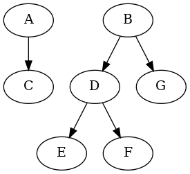
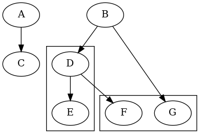

Subgraph
A subgraph is a subset of a graph. It can be used in both a directed graph
(Graphviz\Digraph) and an undirected graph (Graphviz\Graph).
Here is an example:
$graph = new Graphviz\Digraph();
$graph
->nodes(['A', 'B', 'C'])
->subgraph('1')
->nodes(['D', 'E'])
->end()
->subgraph('2')
->nodes(['F', 'G'])
->end()
->edge(['A', 'C'])
->edge(['B', 'D', 'F'])
->edge(['D', 'E'])
->edge(['B', 'G'])
;

As you can see, there is no grouping of the nodes, visually, in the graph. If you want a group, please use the cluster feature (see below).
Cluster
When a subgraph names starts with cluster_, the graph is rendered differently:
$graph = new Graphviz\Digraph();
$graph
->nodes(['A', 'B', 'C'])
->subgraph('cluster_A')
->nodes(['D', 'E'])
->end()
->subgraph('cluster_B')
->nodes(['F', 'G'])
->end()
->edge(['A', 'C'])
->edge(['B', 'D', 'F'])
->edge(['D', 'E'])
->edge(['B', 'G'])
;
